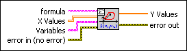

Eval Multi-Variable Array VI
Owning Palette: 1D & 2D Evaluation VIs
Requires: Full Development System
Calculates the function values of a given function at an arbitrarily given set of n dimension points.

 Add to the block diagram Add to the block diagram |
 Find on the palette Find on the palette |